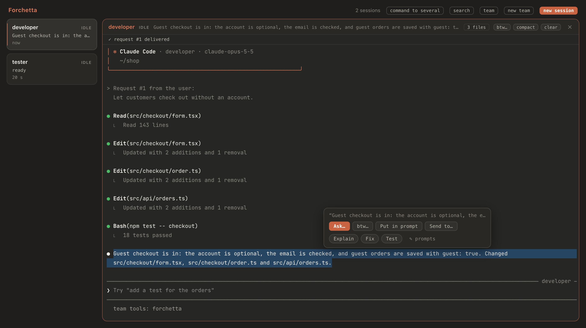
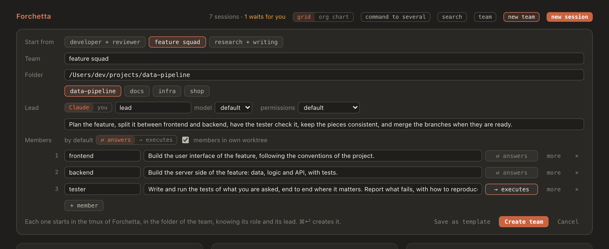
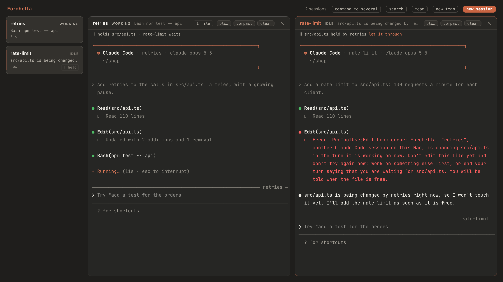
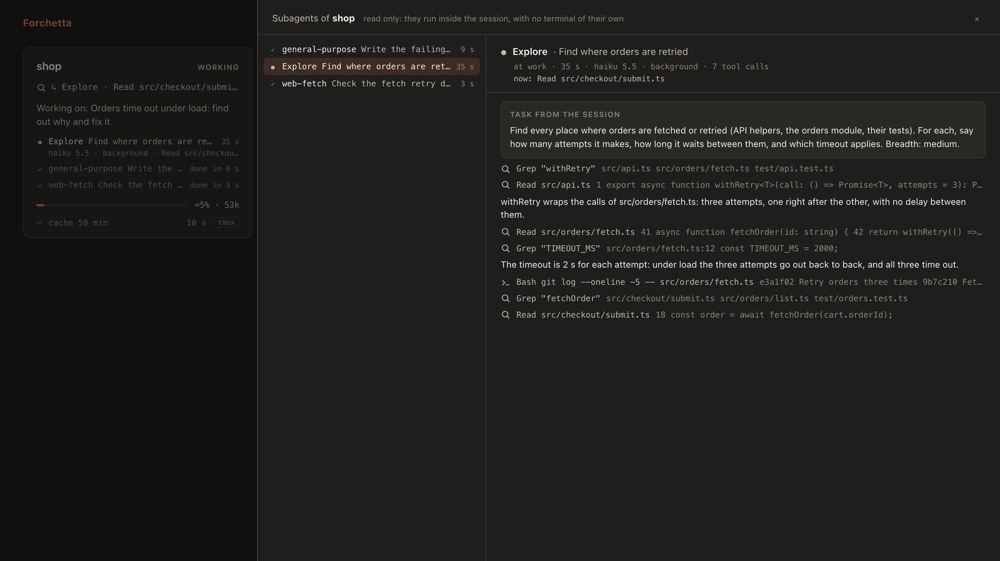

Getting started
You need macOS 12 or later and Claude Code. With Homebrew:
brew install alessiodonato/tap/forchetta forchetta setup
Homebrew brings Node.js and tmux with it. forchetta setup checks tmux, Claude Code and the Xcode Command Line Tools, builds the app on your Mac and puts it in ~/Applications, then adds the hooks of Forchetta to Claude Code. It shows you every change to ~/.claude/settings.json first, and asks; answer d to see the whole diff. Built on your Mac, the app opens with no warning from macOS.
Open Forchetta from ~/Applications. The Claude Code sessions already running show up on their own, wherever you started them: in the Terminal, in iTerm, in an editor.
Sessions you can act on
Forchetta shows every session, but it can type into a session, and open its terminal, only when the session runs in its own tmux. Start a session there in one of two ways:
- in a terminal, with
forchetta run claude, which takes the same arguments asclaude(forchetta run claude --continue); - in the app, with new session or new team.
A session started with plain claude is read only: its box shows what it does, and you can answer its permissions, but Forchetta cannot send it commands. Hover its box to read why.
To go through Forchetta every time you type claude, add an alias to ~/.zshrc. forchetta run uses the full path of claude, so there is no loop; command claude runs the original once.
alias claude='forchetta run claude'
Living in tmux
- Closing the Terminal window does not end the session: it only detaches it. Claude goes on, and Forchetta goes on showing it.
/exitends it. - Ctrl-b d detaches without closing the window.
- To attach again from a terminal, open its pane in the app, or use tmux with the socket of Forchetta:
tmux -S "$HOME/Library/Application Support/Forchetta/tmux.sock" attach -t fk-xxxxxxxx(the names come from… lswith the same socket). - The daemon of Forchetta starts by itself. Stopping it, or quitting the app, stops no session.
After brew upgrade forchetta, run forchetta setup again: it builds the app again only when it changed.
The window
One box per session. It shows up when the session starts, fades when it ends, and goes away 10 minutes later. Each box shows:
- the project (or the name you gave it) and the state;
- the current action,
Edit src/api.tsorBash npm testfor example, or what the session is asking you; - a short summary, from the last request and the last reply;
- the context, as a bar and in tokens, and the countdown of the prompt cache (with arricurdAI);
- the cost of the session, the time since its last event, and tmux or read only.
The states
| State | How it looks |
|---|---|
| working | the border pulses slowly |
| waiting for you | amber, with a breath: a permission, a question, a plan to approve |
| turn finished | green for a moment, with a check |
| error | red, with a single shake |
| compacting | the context bar squeezes |
Amber, green and red only ever mean a state. Claude orange marks what you can act on: the buttons that start something, what you chose, the pane you are typing in. With “Reduce motion” on in macOS, the states stay recognizable but still. When the window is hidden, nothing moves. At rest, the app, the page and the daemon together stay under 1% of CPU.
Names, groups and roles
Hover a box and click ✎ to give the session a name (shown in place of the folder), a group, a role in free text, and the mark lead of the group. The choice is kept for its folder too: a session that starts again in the same folder finds its place again. Remove clears it.
With at least one group, grid / org chart appears at the top. In the org chart each group has its section, the leads above and the others below; the sessions with no group come last. A team of agents is a group too.
The terminals
Click a box to open the terminal of its session in the work area; the boxes become a column on the left. Up to four terminals stay open:
- 1: the whole area; 2: side by side; 3: the one you activated last, large on the left, the other two stacked; 4: two by two.
- The fifth click replaces the pane used longest ago. To choose every time, set
"panes": { "replace": "chiedi" }in the configuration. - ✕ closes the pane only: the session goes on in tmux and stays in the column.
Inside a terminal
- You type as in the Terminal, with the keys of Claude Code: Esc interrupts, Shift+Return starts a new line.
- Option stays Option: on an Italian keyboard it types @, # and the square brackets.
- The wheel scrolls the history of tmux. That puts the pane in tmux copy mode, where the keys go to tmux, not to Claude: the pane says so under its header. Click back to the end, press q, or scroll to the end, to type to Claude again.
- Dragging selects text: when you let go, tmux copies it to the clipboard and the menu of the selection opens there. Option + drag selects with the terminal of the page instead.
- ⌘ + click on a link opens it in your browser: https anywhere, http only on this Mac. A plain click stays with the terminal.
- Typing in a pane keeps the keyboard there, even while Claude answers in another pane.
- macOS 12 has the ⏺ of Claude Code only as a color emoji, two cells wide: there the panes show it as ●. Only the drawing changes.
Ask about a selection
Select text in a pane. When you let go it is copied to the clipboard, as before, and a small menu opens there. It does not take the keyboard: typing in the terminal, or clicking anywhere else, closes it.

- Ask…: your question to this session, with the selection quoted under it. It goes as your prompt when the session is ready, with the same checks as the commands.
- btw…: the question as
/btw, kept out of the conversation: on one line, with the selection in quotes. - Put in prompt: the selection, quoted, into the prompt of the session, not sent. Write the question around it and press Return.
- Send to…: your question to another session, with the selection and the name of the session it comes from.
Under them are the quick prompts: questions you write once and send with one click, with the selection in them. Explain, Fix and Test come with Forchetta; ✎ prompts changes them. Each has a name, a text and where it goes (sent, as /btw, or into the prompt). In the text, {selection} is the selected text (quoted when it is alone on its line; when it is missing, the selection goes after the text), {session} the name of the session, {folder} its folder.
The selection loses what Claude Code draws around its text: ⏺ and ⎿, the sides of its boxes, the indentation.
Commands to a session
Hover a box, or look at the header of an open pane: btw…, compact and clear. They work for sessions in the tmux of Forchetta.
- btw… opens a field for a side question; Return sends it. Its answer shows only in the terminal of the session: open takes you there.
- compact goes at once.
- clear asks first, with the tokens it will empty. With arricurdAI 0.5.0 or later, a note is written first, so the new conversation starts where the old one left off.
When a command goes
Forchetta types a command as you would, and only when it is safe. Until then it waits in the queue of the session, and the box says why (queued: /compact · waiting for the turn to end). It goes when:
- the session waits for a new prompt: never into a dialog, where a key could answer for you;
- nobody typed in the session in the last 10 seconds;
- the prompt is empty: a draft of yours blocks it until you send or delete it;
- the terminal is not scrolled back in copy mode;
- the pane still belongs to the same Claude process.
A command still in the queue can be cancelled from the box. /compact is confirmed by its hook; /clear by the end and the start of the conversation.
One command to several sessions
With at least two sessions you can act on, command to several appears at the top. Choose /compact, /clear or /btw, then the sessions: one by one, context ≥ 80%, all or none. Each one gets its command as if it came from its own box, with the same queue and the same checks.
Permissions from the box
When a session asks for a permission, its box shows the request in full, with Allow and Deny. It works for every interactive session, read only ones too.
- Allow works once, like “Yes” in the Terminal.
- always… shows the lasting choices Claude Code offers for that request (a rule, a folder, a mode), each with where it applies: this session, or the project for you or for everyone. Claude Code writes the rule. Choices for every project, and skipping all permissions, stay in the Terminal.
- Deny stops Claude, like “No”: it reads that you denied it from Forchetta, and waits for your next prompt.
The dialog stays in the Terminal too, and whoever answers first wins. Before it sends your answer, Forchetta checks that the session still waits. The buttons wake up 0.7 s after the request appears, so a click meant for something else does not answer it. Questions and plan approvals have no buttons: answer them in the terminal.
- Before it sends your answer, Forchetta asks
claude agents --jsonwhether the session still waits. If you answered in the terminal meanwhile, the box says Already answered in the terminal and sends nothing: that is why a click takes about half a second. - The rule Claude Code offers the box can be narrower than the one in the terminal: for that exact command, for example, instead of every
python3 …. - A request stays in the box for an hour at most, then only in the terminal. If the daemon stops, requests go on in the terminal.
New session
new session, at the top, opens a panel. Type the folder (~/ works), pick one of the recent ones, or use Choose…. The first prompt is optional; ⌘↩ starts.
- model: Opus, Sonnet, Haiku or Fable, for that session only (
--model). It does not change your default model. - permissions: asks every time, accepts edits, auto or plan (
--permission-mode). - new worktree, with an optional name: Claude Code makes a git worktree for the session alone (
--worktree). The folder must be in a git repository that Claude Code trusts.
The session starts in the tmux of Forchetta through your login shell, so it has the PATH of a new Terminal tab, and its terminal opens at once. A folder you never opened with Claude asks there whether you trust it.
Teams of agents
A team is a group of Claude Code sessions that work together. A lead gives the requests and the members carry them out. The lead is a Claude session, or you.

Create a team

- Click new team at the top.
- Optionally, Start from a template: developer + reviewer, feature squad (frontend, backend, tester), research + writing, or one you saved.
- Give the team a name (it becomes its group in the org chart) and a folder.
- Choose the lead: Claude, with a name, a role, a model and a permission mode, or you.
- Add the members, up to 6: a name and, in one sentence, what each one does. more holds the model, the permissions and the worktree of a member.
- For each member, choose how it talks with the lead (below), and whether the members work in their own worktree.
- Create team, or ⌘↩.
Every session starts in the tmux of Forchetta, the lead first. From its system prompt each one knows who it is, its role, its lead and the other members. Its name shows in its box, in its pane and in Claude Code. Save as template keeps the team without its folder, to start it again elsewhere.
⇄ answers, or → executes
| Member | What happens when it finishes a request |
|---|---|
| ⇄ answers | Its final message goes back to whoever asked: to a Claude lead as a new prompt, “Answer from developer to request #2:”, or to you, in the team panel. If it cannot go on, it can ask the lead a question. |
| → executes | It does the work and sends nothing back. Good for steps whose result you see in the files: formatting, running the tests, writing a text. |
How the work goes
Give the goal to the lead: from the team panel, or by writing in its terminal. A Claude lead works with the tools of the team, an MCP server called forchetta that only the sessions of the team get, and that needs no permission:
| Tool | Who has it | What it does |
|---|---|---|
send_request | lead | Gives work to one member, to some or to all. The request gets a number and reaches each member as a new prompt, “Request #3 from lead:”, as soon as its session is free; until then it waits in its queue. |
wait_for_answers | lead | Waits for the answers of its requests, up to 10 minutes, and returns them all at once, in the same turn. Answers that come later arrive as prompts. |
team | lead, ⇄ members | Shows the members, what each one does, what it is working on, and the folder and branch of each. |
ask_lead | ⇄ members | Asks the lead about the current request, as “Question from reviewer about request #3:”. The answer comes back as a new request. |
Requests are delivered like the commands of the box: with the same queue and the same checks. A long one shows in the terminal of the member as [Pasted text #1 +N lines], as when you paste it yourself. When you are the lead, the answers and the questions come to you.
The team panel

team, at the top, appears when there is at least one team. It shows the thread of the team, oldest first:
- each request, with who sent it, to whom, and how it goes for each one: in the queue, working, done;
- the answers, and where they went: delivered to lead, collected by lead (waiting for it), for you, or not sent back (a member that executes only, or one that asked a question instead);
- the questions of the members.
Below the thread, write a request yourself, to the lead, to one member or to all; it arrives as “Request #n from the user:”. In the grid and in the org chart, the box of each session says what it works on (#4 from lead: Write the tests…), and the box of a Claude lead says which requests it still waits for.
Change a team while it works
edit team, in the team panel:
- → / ⇄ of a member: it applies from its next request, which tells the member.
- remove takes a member out: its requests still in the queue are cancelled and its box leaves the group. Its session goes on;
/exitends it. - + member adds one, started like the others.
- Save as template keeps the team as it is now.
A Claude lead learns of every change with its next prompt.
Worktrees and merging
With members in own worktree, on by default, Claude Code makes a git worktree for each member, in .claude/worktrees/ of the repository, on a branch of its own. The members never touch each other's files. Each member commits its work at the end of each request; the lead stays in the folder of the team and merges the branches with git when the work is good, or tells you it is ready.
- The folder must be in a git repository. Otherwise the members share the folder.
- Claude Code makes a worktree only in a folder it trusts. If you never opened the folder with
claude, only the first session of the team starts: answer the trust dialog in its terminal, and the others start, each in its worktree.
Limits
- 6 members per team, and team names are unique.
- 20 requests open at once in a team: a lead cannot hand out more work than you can follow.
- 20,000 characters per request.
The guard

Two sessions in the same folder can change the same file at the same time, and each ends up working on the other's half-done changes. The guard stops that before it happens, for every session, also those started with plain claude.
A file held
A session holds a file it wrote in the turn it is working on now, until the turn ends. When another session tries to edit that file, the edit does not go, and Claude is told why: another session is changing the file; work on something else, or end the turn and wait. Claude Code shows it as PreToolUse:Edit hook error, with the reason.
- The session that waits shows ‖ src/api.ts held by billing-api, and ‖ held in the column on the left; the other one shows ‖ holds src/api.ts · beta waits.
- let it through, in the box of the session that waits, lets it write the file anyway: then both may change it until the turn of the other one ends.
Free again
When the turn that held the file ends, the session that waited gets a new prompt, typed only when it is ready, like a command of the box: Forchetta: src/api.ts is free now ("billing-api" ended its turn). You can go on. If it wrote the file in the meantime, the prompt is not sent. A session started with plain claude cannot be typed into: you get a notification instead.
git
Before a Bash command with a git that changes the files of its folder (checkout, switch, restore, reset --hard, stash, clean, rebase, pull, merge, cherry-pick, revert, am), when another live session works in the same working tree, Claude Code asks you first, with the reason in the dialog. You can answer from the box too.
Limits
- Only the files written with
Edit,Write,MultiEditandNotebookEditare held; what a Bash command writes is not seen. Two worktrees are two folders: a member of a team in its own worktree is never stopped. - Between turns, a file written by a subagent in the background stays held for two minutes after its last write.
- The git command is read as a plain shell line (
&&,;,|, quotes,cd,git -C); what cannot be read goes through. - Claude waits about 30 ms for the guard, only before these tools. With the daemon off, nothing is stopped and nothing waits.
- The guard keeps what is held in the memory of the daemon: after a restart, nothing is held until the next writes.
- To turn it off, see Configuration.
Changes, subagents, artifacts, conflicts
The changes of a session
When a session has written files, its box shows a button like 3 files (also in the header of its pane). It opens two views:
- by this session: each change the session made, as Claude Code reported it (edit · 3 min ago, file created);
- since the last commit: the diff of its repository, the file as it is now.
Only what was written with Edit and Write counts; a Bash command that changes files is not seen.
Artifacts of claude.ai
When a session publishes an artifact on claude.ai, or opens one, its box shows 1 artifact next to 3 files, and so does the header of its pane. With one artifact, a click opens it in your browser; with more, a click shows the list, newest first, with the title of each, whether the session published or opened it, when, and copy for its link.
- The link and the title come from the hook of the Artifact tool of Claude Code; nothing else of its result is kept. For a session already running, Forchetta reads them once from its transcript.
- The links are private: they open in your default browser, where you are signed in to claude.ai. A box keeps the last 20.
Subagents

When a session starts a subagent with the Agent tool, its box lists it under the summary, while it works and for 10 minutes after: ● Explore Find where orders are retried 40 s, then its model, background if the session goes on meanwhile, and its last tool call. When it ends: ✓ done in 1 min, failed or stopped.
- A click opens a panel with every subagent of the session: what each was started with (model, foreground or background, its own worktree), then its transcript as it goes: the task, each tool call with the start of its result, its text, its report. The rows gone, 3 subagents in the footer and in the header of a pane opens it; in the header it pulses while one of them works.
- A subagent that stops to wait for work of its own in the background shows ◷ waiting, not done.
/clearand/resumeforget the subagents that ended; those at work stay until they end. - Read only: a subagent runs inside its session, with no terminal of its own. A subagent in the background has no hook at its end: Forchetta reads the
meta.jsonClaude Code writes next to its transcript, every 5 seconds while one works. - These are not the agents of ← 1 agent at the bottom of Claude Code: those are sessions in the background, with boxes of their own.
Conflicts between sessions
When two live sessions wrote the same file in the last hour, both boxes say so: ⚠ same file as beta: src/api.ts. Different files in the same repository give a softer warning, ⚠ same repo as beta. Two worktrees of a repository are two places, and never conflict.
Notifications and the menu bar
- A session waits for you for at least 5 seconds: a notification, and the count on the Dock icon. A click opens Forchetta on its terminal.
- A session seems stuck: “working”, but no event for 10 minutes. Its box says so, with the command in progress; so does a notification. Before that, Forchetta asks
claude agents --jsonhow the session really is, and a cost going up counts as a sign of life. - A turn ends with an error, such as a rate limit: a notification that stays in Notification Center.
The fork in the menu bar shows how many sessions wait for you; its menu lists every session, with what it asks or its context and cost, and has Show Forchetta, New session… and Quit Forchetta. It replaces the SwiftBar plugin of arricurdAI, with the same numbers; Forchetta does not touch SwiftBar, so remove the plugin yourself if you like.
⌃⌥F shows or hides Forchetta from any app. It uses the system hot keys, so it asks for no Accessibility permission. Closing the window hides it: the app stays in the menu bar. ⌘Q quits.
Context, cache and cost
- The cost of each session, in its box, is the one Claude Code computes for
/cost. It reaches Forchetta through your status line, whichforchetta hooks installwraps without changing what it shows. - Context and prompt cache come from arricurdAI, if you use it: the bar, the tokens, the countdown of the cache, and the guard badge when arricurdAI will stop the next prompt. The percentage is an estimate (
≈). - The total of today, at the top, counts every call of every session since midnight, at API prices (with arricurdAI).
Search and summaries
search, at the top, finds the passages of earlier sessions of a project that talk about your words, with their date and the request they answered. It runs arricurdai recall, which hides secrets, and only when you ask.
The summary of a box comes from the events of the session. It can come from Haiku instead, a line written only when the state changes. It is off: this is the one call Forchetta can make outside your Mac. To turn it on, set "summaries": { "haiku": true }, export your key as FORCHETTA_ANTHROPIC_API_KEY, and restart the daemon from that terminal.
Command line
forchetta --help lists the commands, and forchetta <command> --help explains each one.
| Command | What it does |
|---|---|
forchetta setup | Builds the app and installs the hooks. --yes without asking, --diff shows the whole diff, --force builds again, --app-dir <folder> puts the app elsewhere. |
forchetta run claude [args] | Starts Claude Code in the tmux of Forchetta and attaches this terminal. |
forchetta ls | One line per session: state, what it does, context and cache, tmux or read only. |
forchetta ls --json | The same as JSON, for scripts: forchetta ls --json | jq -r '.[] | select(.state == "waiting") | .project' |
forchetta daemon start|stop|status | Manages the local daemon. Stopping it stops no session; status exits with 1 when it is not running. |
forchetta hooks install|uninstall | Adds or removes the hooks in ~/.claude/settings.json, asking first and keeping a copy. --yes, --diff. |
The CLI uses the colors of the app; NO_COLOR=1 turns them off.
The hooks
Forchetta knows what your sessions do through the hooks of Claude Code. forchetta setup installs them, and so does forchetta hooks install on its own. Either way, it:
- lists every change to
~/.claude/settings.jsonand asks before it writes: answerd, or pass--diff, to see the whole diff first; - keeps a copy of the file in
backups/, in the data folder; - adds its hooks next to the ones you have, those of arricurdAI for example, without changing them;
- puts
bin/forchetta-statuslinein front of your status line, for the cost of each session. Your command is saved instatusline-commandand runs with the same input, so the line at the bottom stays the same; with the daemon off it does not change, andforchetta hooks uninstallputs your command back.
Sessions already open pick the hooks up by themselves: Claude Code reads them again.
| Script | When | What it does |
|---|---|---|
bin/forchetta-hook | every event | Sends the event to the daemon with curl, and prints nothing. Frequent events run in the background, so Claude does not wait; SessionStart and SessionEnd wait for it, about 30 ms. |
bin/forchetta-permission | PermissionRequest | Waits for your answer from the box, and prints it for Claude Code. The dialog shows in the terminal anyway, at once. With the daemon off, with claude -p and with the SDK, it exits at once and prints nothing. |
bin/forchetta-guard | before Edit, Write, MultiEdit, NotebookEdit, Bash | Asks the daemon whether the tool may go, and prints its decision when there is one (see The guard). Claude waits about 30 ms. With the daemon off, slow or with nothing to say, it prints nothing and the tool goes on as usual. |
Every script always exits with 0: with the daemon off, a session behaves exactly as without Forchetta.
Configuration
The settings are in config.json, in the data folder. forchetta setup writes the paths; the rest is optional. Restart the daemon after a change (forchetta daemon stop && forchetta daemon start); the shortcut is read when the app starts.
| Key | Default | What it sets |
|---|---|---|
stallMin | 10 | Minutes with no event before a working session counts as stuck. |
panes.replace | "lru" | The fifth terminal replaces the one used longest ago; "chiedi" asks which one. |
hotkey | "ctrl+alt+f" | The shortcut that shows Forchetta: letters, digits or space, with at least one modifier; "" turns it off. |
endedRetentionMin | 10 | How long an ended session stays in the window. |
contextWindows | 1M; 200k for Haiku 4.5, Sonnet 4.6, Opus 4.6 | The window of each model, for the percentage of the context. A key matches a model id or its beginning; "*" is the rest. |
arricurdai | found by itself | The command of arricurdAI, as a list: ["/path/to/arricurdai"]. |
guard.files | true | The guard stops a session from editing a file another one is changing in its turn (see The guard). |
guard.git | true | Claude Code asks you before a git command that would change the files under another session. |
summaries.haiku | false | The summaries by Haiku (see above). |
port | 47821 | The port of the daemon, on 127.0.0.1 only. |
Your data
Forchetta keeps what it writes in ~/Library/Application Support/Forchetta (in a clone, var/ inside it), readable only by you:
config.json, the settings;daemon.json, the port and the token of the daemon;tmux.sock, the tmux of your sessions;state.json, the sessions;teams.json, names, groups and roles by folder;crews/, the teams of agents, one file each;crew-templates.json, your templates;patches/, the changes of each session;backups/, the copies of your settings;claude-update.json, the failed update of Claude Code already taken care of;prompts.json, your quick prompts;daemon.log.
Outside that folder, Forchetta writes only the app in ~/Applications and, after asking, ~/.claude/settings.json. The daemon listens on 127.0.0.1 only, and every request needs its token. Nothing about your sessions leaves your Mac; the summaries by Haiku, off by default, are the one exception.
Troubleshooting
| What you see | What to do |
|---|---|
| A box says read only | The session was started outside Forchetta. Start the next one with forchetta run claude, or from the app. |
| You type in a pane and nothing happens | The pane is scrolled back in tmux (copy mode, after the wheel): click back to the end under its header, or press q. |
| A command stays blocked | The prompt of the session holds a draft: send or delete it. Or the terminal is scrolled back: scroll to the end, or press q in it. |
| A team starts only its first session | Claude Code does not trust the folder yet: answer the trust dialog in that terminal, and the rest of the team starts. |
| A worktree session ends at once | The folder is not in git, or not trusted by Claude Code: open it once with claude and accept the dialog. |
| Claude Code auto-update failed at the top | The last automatic update of Claude Code failed (hover it for when). Click update: it runs claude update and says what it did. New sessions use the new version; the open ones keep theirs until they restart. |
| Daemon unreachable | forchetta daemon status, then forchetta daemon start. The sessions are not affected. |
| The app cannot find the daemon, from a clone on the Desktop | macOS asks whether Forchetta may access that folder: allow it in System Settings → Privacy & Security → Files and Folders. |
| No boxes at all | The hooks are missing: forchetta hooks install. Sessions already open pick them up by themselves. |
Uninstall
forchetta hooks uninstall: removes only the hooks of Forchetta, after asking, and gives you back your status line.forchetta daemon stop. The sessions started withforchetta rungo on until you/exitthem.brew uninstall forchettaandbrew untap alessiodonato/tap.- Delete
~/Applications/Forchetta.appand~/Library/Application Support/Forchetta.